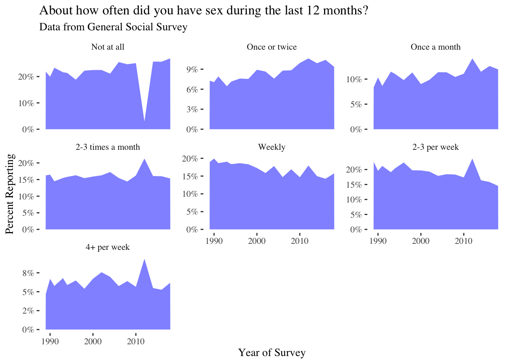
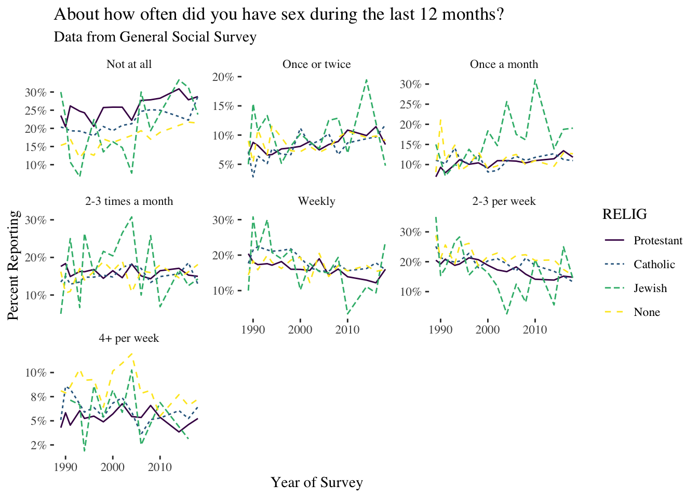
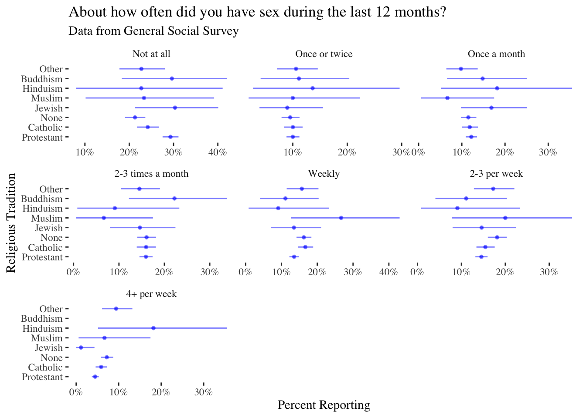
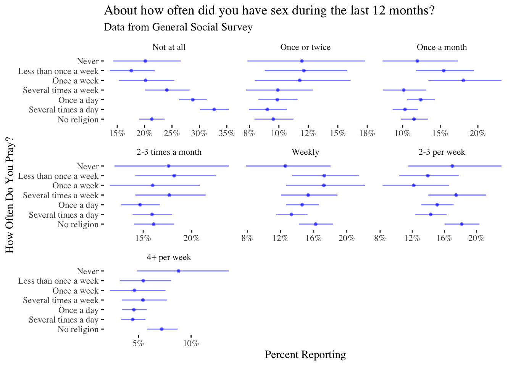
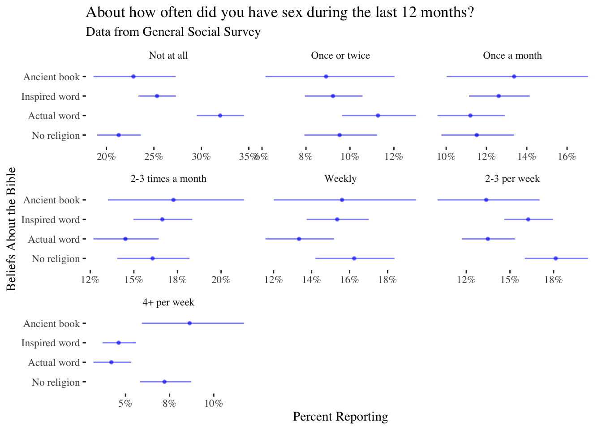
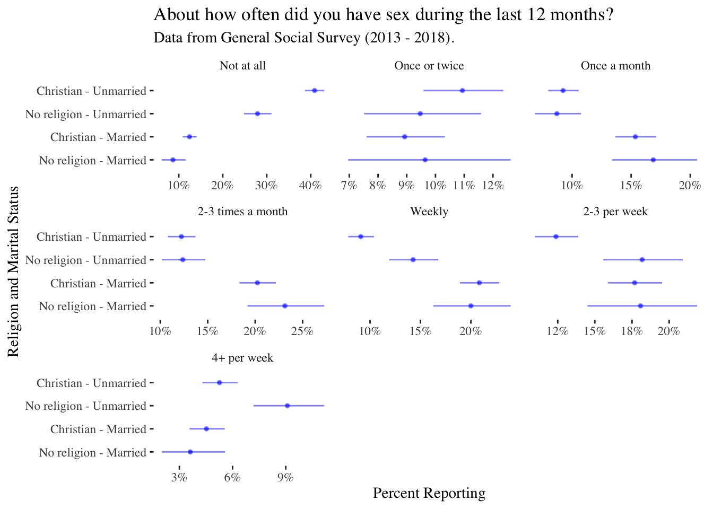

Read my latest on 5 lessons from political science to help rebuild Syria in The Conversation.
Which Religious Groups Have the Most Sex?
There’s a lot of discussion about how religion affects people’s sex lives. But how much sex on average do different religious groups have?
How much sex on average do different religious groups have? The findings might (or might not) surprise you.
R
Sexuality
Opinion Polling
Data Science
Author
Robert Kubinec
Published
June 21, 2021
Interested in more fun writing on science? Check out my just-released novel,The Bayesian Hitman, about a statistician who takes on the Russian mafia.
There has been plenty of discussion about declining fertility rates and patterns of marriage among people in the United States following the news that the US birth rate declined to its lowest since the Great Depression. There are a lot of debates about why this is the case, whether it be the expense of raising children, the lack of flexible options for women with careers, or a loss of societal values favoring larger families. Part of the backdrop of this demographic change, of course, are changes in how Americans identify themselves, particularly in terms of religion. For the last several decades, Americans have moved away from traditional religious categories like Christianity towards so-called unaffiliated status.
This matters for birth rates because it seems like people who do not have a religious identity are also noticeably less likely to have children. While doing some reading on this subject on my own, which I find fascinating–is there a connection between these changes in religious affiliation and child bearing?–I also wanted to see whether belonging to a religious group changes sexual frequency. In other words, does becoming more or less religious lead to more sexual activity overall? There are a plethora of studies about virtually every side of American sex lives, but surprisingly I couldn’t answer this question from a review of studies (admittedly limited by my knowledge of the field and Google Scholar). As a result, in this post I’ll set out to answer this basic descriptive question:
Which religious groups have the highest rates of reported sexual activity?
So that you don’t have to read the post, here are the topline findings:
On the whole, non-religious people have more frequent sex than religious people. However, the differences only exist for unmarried people. For married people, there aren’t very clear differences in terms of sexual frequency, and if anything religious people may have very frequent sex more often.
When looking at unmarried people, the differences are most pronounced for abstaining from sex entirely (no sexual intercourse in the past year) and more frequent sexual activity (once a week or more). Non-religious unmarried people are much less likely to abstain from sex entirely and considerably more likely to engage in very frequent sexual activity.
For intermediate levels of sexual activity (once or twice a month), there do not seem to be big differences in sexual frequency by religion no matter how the data is chopped up.
Data
To answer this question, I’ll use data from the truly phenomenal General Social Survey. As a social scientist who does most of my work outside of the developed West, I am perpetually amazed at the quality of data about the lives of people in wealthier countries, ranging from their sexual proclivities to wealth, income, and political partisanship. In the Middle East where I do the majority of my research, these types of studies are just becoming more prevalent, and collecting data on sexual activity is largely still taboo.
Digression aside, the rest of this post I will show the data processing steps to answer this question. The data are easily available from GSS’ site linked above, and they even have a handy dandy R script to load the data (see this post’s Rmarkdown file for details). I was able to obtain a range of demographic and social questions for the survey’s entire duration of 1978 - 2018, although the sexual frequency questions only started in the late 1980s.
Description
The plot below shows the levels of reported sexual frequency over time for each of the possible responses to the GSS question about how often the respondent had sex in the past 12 months:
GSS %>%filter(!is.na(SEXFREQ)) %>%group_by(SEXFREQ,YEAR) %>%count() %>%group_by(YEAR) %>%mutate(prop_n=n/sum(n)) %>%ggplot(aes(y=prop_n,x=YEAR)) +geom_area(fill="blue",alpha=0.5) +facet_wrap(~SEXFREQ,scale="free_y") +theme_tufte() +scale_y_continuous(labels=scales::percent_format(accuracy =1)) +labs(y="Percent Reporting",x="Year of Survey") +ggtitle("About how often did you have sex during the last 12 months?",subtitle="Data from General Social Survey")

We can see from the data above that the levels of reported sexual frequency are pretty stable over time. This is good news in terms of survey validity as we wouldn’t expect these numbers to dramatically bounce around from year to year. It is clear that there have been slow but steady decreases in the proportion reporting weekly intercourse and rising levels of those who have sex a month or 1-2 times a month. By contrast, those who have sex four or more times a week has remained relatively constant, if a relatively small minority of respondents (~5%).
It is important to note as well the weird dip in the data in 2012 for those reporting no sexual activity. This is apparently an issue with the 2012 survey reporting of these questions, which is something we’ll need to be aware of in this data analysis. Always plot your data!
Religion and Sex
Now that we’ve examined the data, we’ll go ahead and begin breaking down these categories by religious affiliation. As a first cut, we’ll use a question in the GSS that asked people to report the broad religious tradition they belong to, and re-do the plot above with lines for each of these religious traditions. To clean up the plot a bit we’ll exclude some very small religious categories.
GSS %>%filter(!is.na(SEXFREQ),!is.na(RELIG),!(RELIG %in%c("Native American","Inter","Other Eastern","Other","Buddhism","Hinduism","Orthodox","Christian","Muslim")), YEAR!=2012) %>%group_by(SEXFREQ,RELIG,YEAR) %>%count() %>%group_by(YEAR,RELIG) %>%mutate(prop_n=n/sum(n)) %>%ggplot(aes(y=prop_n,x=YEAR)) +geom_line(aes(colour=RELIG,linetype=RELIG)) +facet_wrap(~SEXFREQ,scale="free_y") +theme_tufte() +scale_y_continuous(labels=scales::percent_format(accuracy =1)) +scale_colour_viridis_d() +labs(y="Percent Reporting",x="Year of Survey") +ggtitle("About how often did you have sex during the last 12 months?",subtitle="Data from General Social Survey")

This plot shows a lot more bounce or variation over time, especially for the categories with fewer respondents, such as Jewish people. This can make it difficult to pull out clear trends, although it would seem that people who report no religious affiliation have more frequent sexual activity at least in some categories, i.e. high levels of intercourse (more than 4 times per week) and also fewer abstainers. Jewish people, by contrast, may be more likely to report infrequent sexual activity (once a month or once or twice a month).
We can get a more precise answer for all religious groups in the GSS if we take the average of the past five years (2013 to 2018). I report these in the plot below:
GSS %>%filter(!is.na(SEXFREQ),!is.na(RELIG), YEAR>2012) %>%mutate(RELIG=fct_collapse(RELIG,Other=c("Other Eastern","Other","Native American","Inter","Christian","Orthodox"))) %>%group_by(SEXFREQ,RELIG) %>%count() %>%group_by(RELIG) %>%mutate(prop_n=n/sum(n),lower=binom.confint(n,sum(n),method="bayes")$lower,upper=binom.confint(n,sum(n),method="bayes")$upper,RELIG=factor(RELIG,levels=c("Protestant","Catholic","None","Jewish","Muslim","Hinduism","Buddhism","Other"))) %>%ggplot(aes(y=prop_n,x=RELIG)) +geom_pointrange(aes(ymin=lower,ymax=upper),colour="blue",alpha=0.5,size=.1) +facet_wrap(~SEXFREQ,scales="free_x") +theme_tufte() +scale_y_continuous(labels=scales::percent_format(accuracy =1)) +scale_colour_viridis_d() +labs(y="Percent Reporting",x="Religious Tradition") +coord_flip() +ggtitle("About how often did you have sex during the last 12 months?",subtitle="Data from General Social Survey")

The plot above shows proportions along with a 5% to 95% confidence interval of likely values. The wide intervals for the smaller religious categories shows the uncertainty in these estimates even when averaging over four years’ worth of data. Only when comparing between nones, Catholics and Protestants can we make any clear comparisons, and it would seem again that people without religious affiliation are less likely to abstain from sex and also somewhat more likely to report higher rates of sexual activity (2-3 and 4 or more times per week). For the other categories, there is relatively little difference between religious categories, and the other groups are too small to make strong inferences.
Religious Devotion
While the analysis above allows us to answer some very basic questions about rates of sexual activity, it leaves a lot unanswered. One of the most important problems is that we are using reported religious categories rather than a measure of religious observance. While we might think that people without religious affiliation are equally un-affiliated (though perhaps not always), we certainly can’t say that for those with religious affiliation. Some are much more involved in their religious tradition, and we might think of them as “better” representativeness of what it means to be religious.
The GSS has a few questions that can help us tackle this question. From here on I’ll focus primarily on differences between Protestants, Catholics and unaffiliated as they are the largest groups in the survey, and we’ll keep our focus on the last four years of data. We’ll use two questions to differentiate respondents. First, we’ll use a question describing how often respondents pray as a measure of devotion. To measure theological differences, we’ll use a question about beliefs about the Bible.
We can then look at rates of sexual activity for these three main groups when comparing religious people by their levels of prayer and types of theological convictions. To do so, we’ll break down the Protestant/Catholic group by prayer activity and theological conviction, and compare these subsets to people with no religion as a group. First, for prayer:
GSS %>%filter(!is.na(SEXFREQ),!is.na(RELIG), YEAR>2012, RELIG %in%c("None","Protestant","Catholic")) %>%mutate(RELIG=fct_collapse(RELIG,Christian=c("Protestant","Catholic")),PRAY_RELIG=ifelse(RELIG!="Christian","No religion",as.character(PRAY)),PRAY_RELIG=ordered(PRAY_RELIG, levels=c("No religion","Several times a day","Once a day","Several times a week","Once a week","Less than once a week","Never"))) %>%filter(!is.na(PRAY_RELIG)) %>%group_by(SEXFREQ,PRAY_RELIG) %>%count() %>%group_by(PRAY_RELIG) %>%mutate(prop_n=n/sum(n),lower=binom.confint(n,sum(n),method="bayes")$lower,upper=binom.confint(n,sum(n),method="bayes")$upper) %>%ggplot(aes(y=prop_n,x=PRAY_RELIG)) +geom_pointrange(aes(ymin=lower,ymax=upper),colour="blue",alpha=0.5,size=.1) +facet_wrap(~SEXFREQ,scales="free_x") +theme_tufte() +scale_y_continuous(labels=scales::percent_format(accuracy =1)) +scale_colour_viridis_d() +labs(y="Percent Reporting",x="How Often Do You Pray?") +coord_flip() +ggtitle("About how often did you have sex during the last 12 months?",subtitle="Data from General Social Survey")

The plot above provides some more nuance to the story: those who pray a lot tend to abstain more and have less frequent sex at high rates, though again the record is much more mixed for intermediate levels of sexual activity. For people who report religious affiliation but don’t pray much, they actually report higher sexual frequency than people who are religiously unaffiliated, though the estimates are somewhat imprecise. We can also look at a similar breakdown for beliefs about the bible:
GSS %>%filter(!is.na(SEXFREQ),!is.na(RELIG), YEAR>2012, RELIG %in%c("None","Protestant","Catholic")) %>%mutate(RELIG=fct_collapse(RELIG,Christian=c("Protestant","Catholic")),BIBLE_RELIG=ifelse(RELIG!="Christian","No religion",as.character(BIBLE)),BIBLE_RELIG=ordered(BIBLE_RELIG, levels=c("No religion","Actual word","Inspired word","Ancient book","Other"))) %>%filter(!is.na(BIBLE_RELIG),BIBLE_RELIG!="Other") %>%group_by(SEXFREQ,BIBLE_RELIG) %>%count() %>%group_by(BIBLE_RELIG) %>%mutate(prop_n=n/sum(n),lower=binom.confint(n,sum(n),method="bayes")$lower,upper=binom.confint(n,sum(n),method="bayes")$upper) %>%ggplot(aes(y=prop_n,x=BIBLE_RELIG)) +geom_pointrange(aes(ymin=lower,ymax=upper),colour="blue",alpha=0.5,size=.1) +facet_wrap(~SEXFREQ,scales="free_x") +theme_tufte() +scale_y_continuous(labels=scales::percent_format(accuracy =1)) +scale_colour_viridis_d() +labs(y="Percent Reporting",x="Beliefs About the Bible") +coord_flip() +ggtitle("About how often did you have sex during the last 12 months?",subtitle="Data from General Social Survey")

Again, the results are similar and if anything even stronger. Those who hold more conservative beliefs about the Bible are more likely to abstain from sex and report very high levels of weekly sexual activity. Again, the differences are much less pronounced for intermediate levels.
Religion, Marriage and Sex
There is one more difference I will examine before wrapping up this exercise. One issue with the above analysis is that it does not take into account marriage. We might expect that marriage would explain why some religious people do not engage in sex, i.e., beliefs that sex outside of marriage is impermissible. For that reason, in this section I do a further analysis and compare Protestants, Catholics and the unaffiliated by whether or not they are married. To do so I create a new variable in which I combine marriage status and religious status.
GSS %>%filter(!is.na(SEXFREQ),!is.na(RELIG), YEAR>2012, RELIG %in%c("None","Protestant","Catholic")) %>%mutate(RELIG=fct_collapse(RELIG,Christian=c("Protestant","Catholic")),MAR_RELIG=case_when(RELIG=="None"& MARITAL=="Married"~"No religion - Married", RELIG=="None"~"No religion - Unmarried", RELIG=="Christian"& MARITAL=="Married"~"Christian - Married", RELIG=="Christian"~"Christian - Unmarried"),MAR_RELIG=ordered(MAR_RELIG, levels=c("No religion - Married","Christian - Married","No religion - Unmarried","Christian - Unmarried"))) %>%filter(!is.na(MAR_RELIG),MAR_RELIG!="Other") %>%group_by(SEXFREQ,MAR_RELIG) %>%count() %>%group_by(MAR_RELIG) %>%mutate(prop_n=n/sum(n),lower=binom.confint(n,sum(n),method="bayes")$lower,upper=binom.confint(n,sum(n),method="bayes")$upper) %>%ggplot(aes(y=prop_n,x=MAR_RELIG)) +geom_pointrange(aes(ymin=lower,ymax=upper),colour="blue",alpha=0.5,size=.1) +facet_wrap(~SEXFREQ,scales="free_x") +theme_tufte() +scale_y_continuous(labels=scales::percent_format(accuracy =1)) +scale_colour_viridis_d() +labs(y="Percent Reporting",x="Religion and Marital Status") +coord_flip() +ggtitle("About how often did you have sex during the last 12 months?",subtitle="Data from General Social Survey (2013 - 2018).")

We see that this plot helps clarifies things. Virtually all the differences between religious and non-religious people have to do with marriage. Married religious and non-religious people have sex at roughly similar frequencies; married religious people in fact report very frequent sex at slightly higher rates than non-religious paper. For unmarried people, however, the differences can be stark. Over 40% of unmarried Christian respondents report no sexual activity in the past year, versus fewer than 30% for non-religious people.
Again, and quite interestingly, the differences for unmarried people are only pronounced for either abstention or more frequent sexual activity (one week or more). For more monthly sexual activity there do not appear to be differences between religious and non-religious people.
Conclusion
There are indeed profound differences in the rates of sexual activity by religious affiliation, even just reported membership in a religious tradition. The differences become much more pronounced when we take into account religious beliefs and religious practices, but it is clear that marriage is arguably the most important factor. Married people report largely similar levels of sexual activity regardless of religious inclination, and if anything religious married people may have very frequent sex more often than non-religious married people.
It should be clear by now that making these comparisons is difficult. I did not look at income, people’s family history or number of children in their marriage, all of which could affect sexual activity. Instead, I wanted to draw some basic descriptive findings, which I think can help frame this question. It also provides some important evidence that sexual activity and religion do appear to be closely intertwined, even if it’s not always clear exactly what is driving the differences.